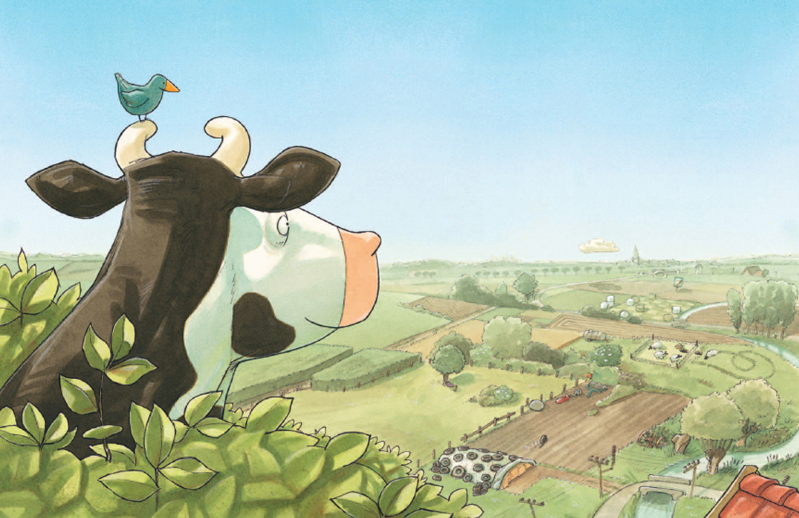

Wir laden ein zur Vorlesestunde (Kamishibai-Erzähltheater) für Kinder ab 3 Jahre
aus dem Buch …
„Lieselotte versteckt sich“

Die Kuh Lieselotte liebte es, mit ihren Freunden auf dem Bauernhof Verstecken zu spielen.
Heute aber hatte Sie jedoch kein Glück. Alle guten Verstecke waren schon besetzt.
Ihr glaubt nicht, welches Versteck Lieselotte dann aber fand.
Ein Bilderbuch voller Überraschungen, zum Mitmachen und Entdecken.
Kommt am Dienstag, 20. Februar 2018 um 15 Uhr in die Bücherei Bilfingen
Einladung zu Literatur für alle Sinne zum Thema „Hopfen & Malz“
Freitag, 09. März 2018 - 20 Uhr in der Bücherei Bilfingen


Themen an diesem Abend:
- Geschichte des Bieres
- Brauen des Bieres - auch Selbstbrauen und Ausrüstung
- Biersorten und Bierproben
- Heilkraft des Bieres
- Bücher zum Thema Bier
- Dazu kulinarische Kostproben
- …vom Begrüßungsgetränk bis zum Dessert.
Eintritt: 10,- Euro pro Person
Um Anmeldung wird gebeten